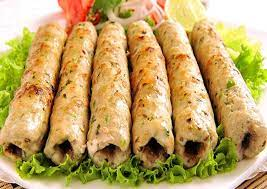

Fish Kabab

-
About Fish Kabab
-
The best fish to cook kebab recipe includes salmon, seer fish, mahi mahi, and bhetki, and you may also make
tuna fish kebabs.
Grilled marinated fish kebab is a simple snack that uses cubed fish fillets.
This grilled variant of the kebab is best served with green chutney.
Go Back